Mark Lucernas
Sep 09, 2020
2.8 The Derivative as a Function
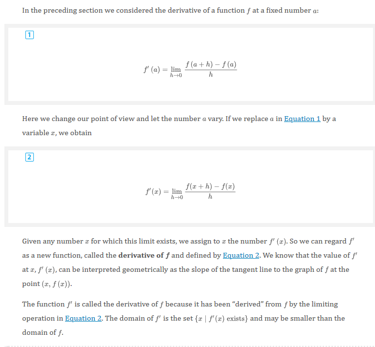 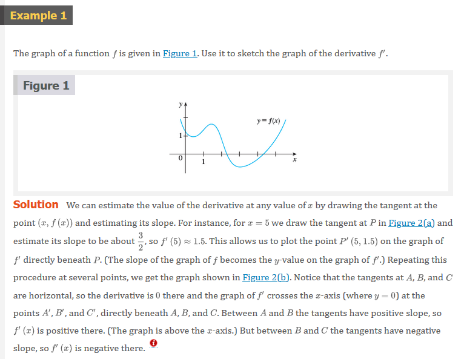 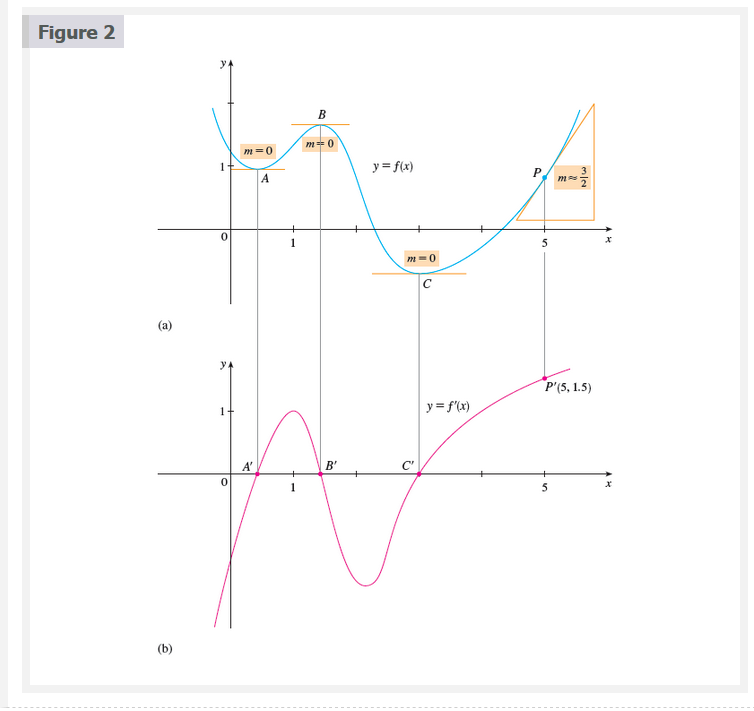 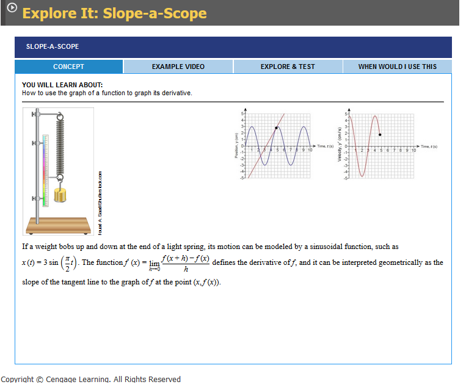  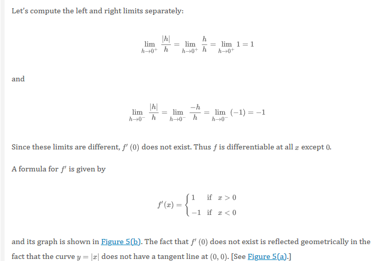
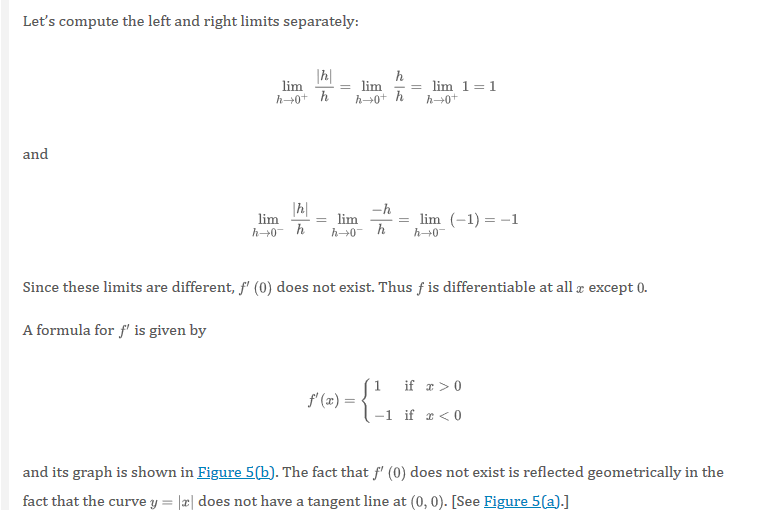 
 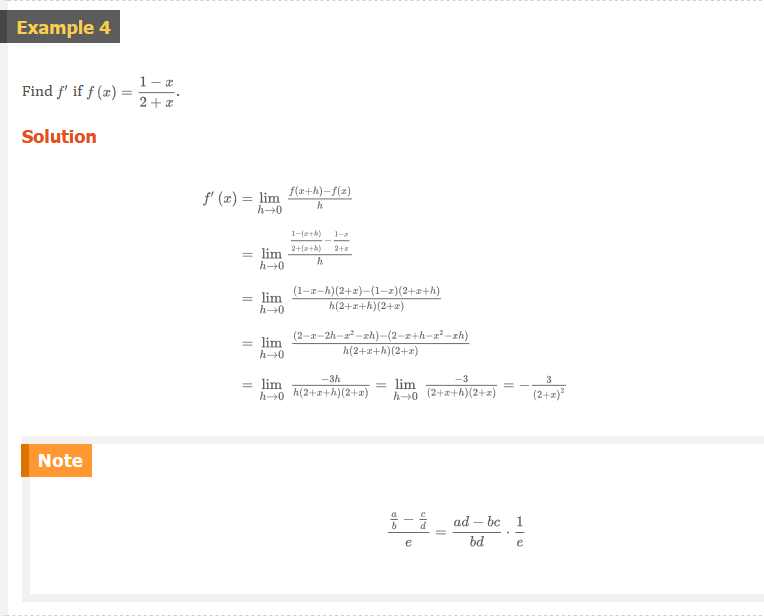
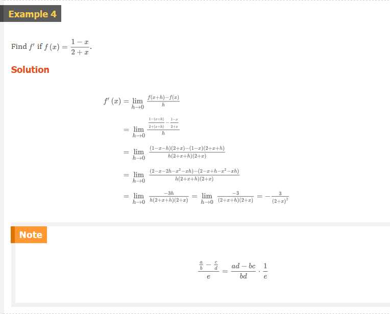
Other Notations
If we use the traditional notation \(y = f(x)\) to indicate that the independent variable is \(x\) and the dependent variable is \(y\), then some common alternative notations for the derivative are as follows:
\[ f^{\prime}(x) = y^{\prime} = \frac{dy}{dx} = \frac{df}{dx} = \frac{d}{dx} f(x) = Df(x) = D_{x}f(x) \]
The symbols \(D\) and \(d/dx\) are called differentiation operators because they indicate the operation of differentiation, ,which is the process of calculating a derivative
The symbol \(dy/dx\), which was introduced by Leibniz, should not be regarded as a ration (for the time being); it is simply a synonym for \(f^{\prime}(x)\). Nonetheless, it is a very useful and suggestive notation, especially when used in conjunction with increment notation. Referring to ⚓ Equation 2.7.6, we can rewrite the definition of derivative in Leibniz notation in the form
\[ \frac{dy}{dx} = \lim_{\Delta{x} \to 0} \frac{\Delta{y}}{\Delta{x}} \]
If we want to indicate the value of a derivative \(dy/dx\) in Liebniz notation at a specific number \(a\), we use the notation
\[ \left.\begin{matrix} \frac{dy}{dx} \end{matrix}\right| _{x = a} \]
or
\[ \left.\begin{matrix} \frac{dy}{dx} \end{matrix}\right] _{x = a} \]
which is a synonym for \(f^{\prime}(a)\). The vertical bar means “evaluate at.”
3 Definition
A function \(f\) is differentiable at \(a\) if \(f^{\prime}(a)\) exists. It is differentiable on an open interval \((a, b)\) [or \((a, \infty)\) or \((-\infty, a)\) or \((-\infty, \infty)\)] if it is differentiable at every number in the interval.
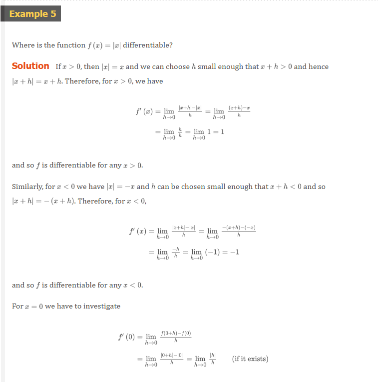 

4 Theorem
If \(f\) is differentiable at \(a\), then \(f\) is continuous at \(a\).
 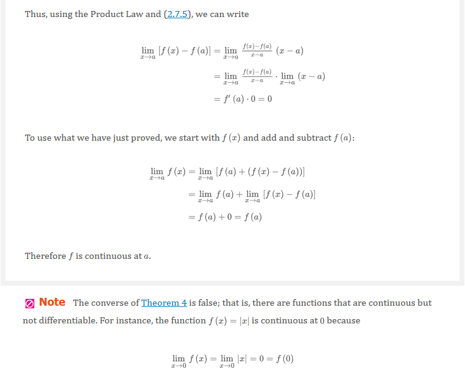
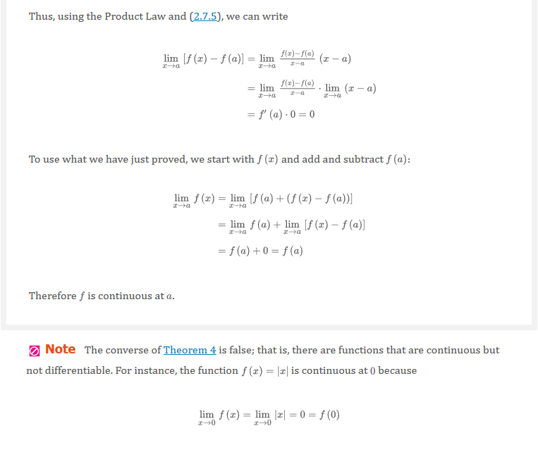
How Can a Function Fail to Be Differentiable?
We saw that the function \(y = |x|\) in Example 5 is not differentiable at \(0\) and Figure 5(a) shows that its graph changes direction abruptly when \(x = 0\). In general, if the graph of a function \(f\) has a “corner” or a “kink” in it, then the graph of \(f\) has no tangent at this point and \(f\) is not differentiable there.
Theorem 4 gives another way for a function not to have a derivative. It says that if \(f\) is not continuous at \(a\), then \(f\) is not differentiable at \(a\). So at discontinuity (for instance, a jump discontinuity) \(f\) fails to be differentiable.
A third possibility is that the curve has a vertical tangent line when \(x = a\); that is, \(f\) is continuous at \(a\) and
\[ \lim_{x \to a} \left | f^{\prime}(x) \right | = \infty \]
This means that the tangent lines become steeper and steeper as \(x \to a\). Figure 6 shows one way that this can happen; Figure 7(c) shows another. Figure 7 illustrates the three possibilities that we have discussed
 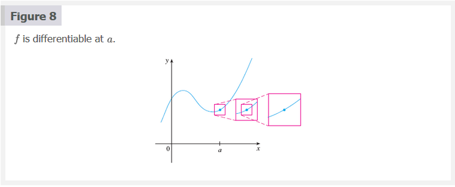
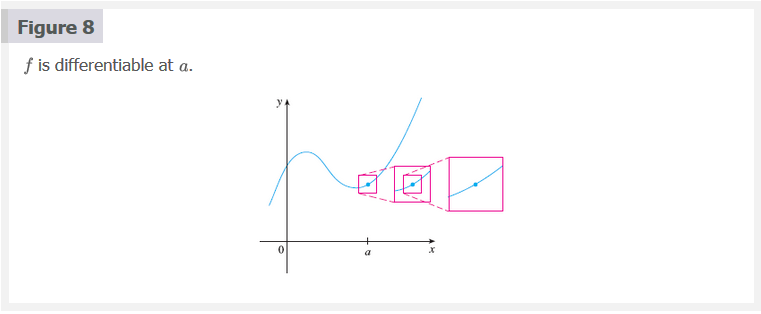 
Higher Derivatives
If \(f\)is a differentiable function, then its derivative \(f^{\prime}\)is also a function, so \(f^{\prime}\) may have a derivative of its own, denoted by \((f^{\prime}) = f^{\prime \prime}\). This new function \(f^{\prime \prime}\) is called the second derivative of \(f\) because it is the derivative of the derivative of \(f\). Using Leibniz notation, we write the second derivative of \(y = f(x)\) as
\[ \begin{matrix} \underbrace{\frac{d}{dx}} & \underbrace{\left ( \frac{dy}{dx} \right )} &= \underbrace{\frac{d^{2}y}{dx^{2}}} \\ \text{derivative} & \text{first} & \text{second} \\ \text{of} & \text{derivative} & \text{derivative} \end{matrix} \]
 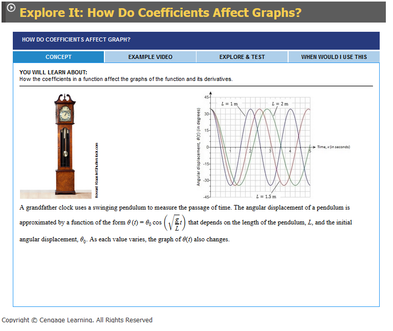
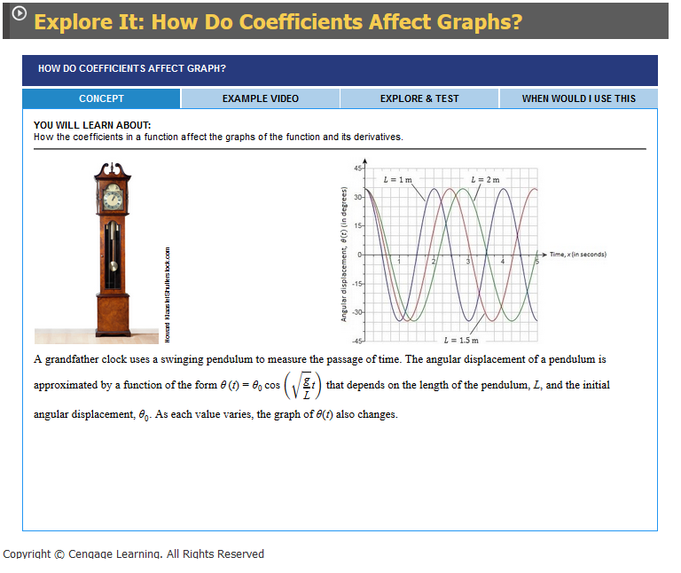
In general, we can interpret a second derivative as a rate of change of a rate of change. The most familiar example of this is acceleration, which we define as follows.
If \(s = s(t)\) is the position function of an object that moves in a straight line, we know that its first derivative represents the velocity \(v(t)\) of the object as a function of time:
\[ v(t) = s^{\prime}(t) = \frac{ds}{dt} \]
The instantaneous rate of change with respect to time is called the acceleration \(a(t)\) of the object. Thus the acceleration function is the derivative of the velocity function and therefore the second derivative of the position function:
\[ a(t) = v^{\prime}(t) = s^{\prime \prime}(t) \]
or, in Leibniz notation,
\[ a = \frac{dv}{dt} = \frac{d^{2}s}{dt^{2}} \]
Acceleration is the change in velocity you feel when speeding up or slowing down in a car. The third derivative \(f^{\prime \prime \prime}\) is the derivative of the second derivative: \(f^{\prime \prime \prime} = (f^{\prime \prime})^{\prime}\). So \(f^{\prime \prime \prime}(x)\) can be interpreted as the slope of the curve \(y = f^{\prime \prime}(x)\) or as the rate of change of \(f^{\prime \prime}(x)\). if \(y = f(x)\), then alternative notations for the third derivative are
\[ y^{\prime \prime \prime} = f^{\prime \prime \prime} = \frac{d}{dx} \left ( \frac{d^{2}y}{dx^{2}} \right ) = \frac{d^{3}y}{dx^{3}} \]
We can also interpret the third derivative physically in the case where the function is the position function \(s = s(t)\) of an object that moves along a straight line. Because \(s^{\prime \prime \prime} = (s^{\prime \prime})^{\prime} = a^{\prime}\), the third derivative oof the position function is the derivative of the acceleration function and is called the jerk:
\[ j = \frac{da}{dt} = \frac{d^{3}s}{dt^{3}} \]
Thus the jerk \(j\) is the rate of change of acceleration. It is aptly named because large jerk means a sudden change in acceleration, which causes an abrupt movement in a vehicle.
The differentiation process can be continued. The fourth derivative \(f^{\prime \prime \prime \prime}\) is usually denoted by \(f^{(4)}\). In general, the \(n\)th derivative of \(f\) is denoted by \(f^{n}\) and is obtained from \(f\) by differentiating \(n\) times. If \(y = f(x)\), we write
\[ y^{(n)} = f^{(n)}(x) = \frac{d^{n}y}{dx^{n}} \]